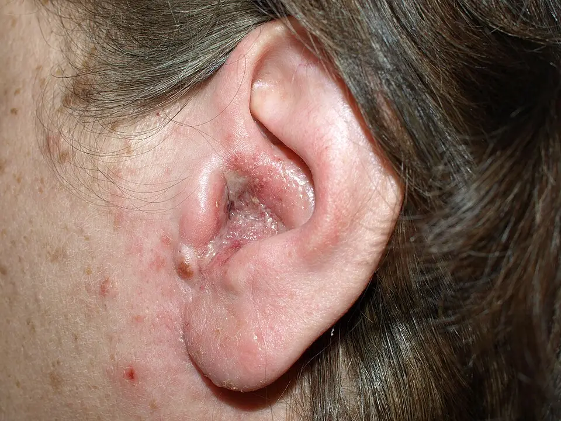

DX.1 — Otite externe aiguë bactérienne
L'otite externe aiguë bactérienne est l'infection fréquente et douloureuse de la peau du conduit auditif, que l'on traite par des gouttesS1. Le médecin écarte d'abord l'otite nécrosante et l'extension régionale, puis vérifie le tympan avant de choisir la préparationS1S6.
1. Définition
Le protocole des HUG (Hôpitaux universitaires de Genève), daté du 14.07.2022, définit l'otite externe comme une inflammation du conduit auditif externe (CAE), avec ou sans infectionS1. Dans la majorité des cas, il s'agit d'une cellulite du derme et de l'hypoderme qui tapissent le conduitS1. La revue allemande de Wiegand et collaborateurs la définit comme une infection de la peau et du tissu sous-cutané du conduit, qui peut s'étendre au tympan et au pavillonS3.
2. Épidémiologie (Suisse, puis Europe)
Le service d'ORL (oto-rhino-laryngologie) des HUG décrit l'otite externe comme la cause la plus fréquente de consultation ORL dans le monde, à tous les âges. Cette fréquence baisse après 60 ansS2. La prévalence sur la vie entière atteint environ 10 %, et les études néerlandaises et britanniques retrouvent une incidence annuelle proche de 1 %S3. Les chiffres utiles, le terrain exposé et le profil microbien expliquent pourquoi ce diagnostic occupe le premier rang de l'otorrhée. Plus de 90 % des otites externes relèvent d'une bactérieS3.
Chiffres utiles : Suisse, puis Europe
| Donnée | Valeur | Lieu et année | Source |
|---|---|---|---|
| Rang parmi les motifs de consultation ORL | Première cause, à tous âges ; fréquence en baisse après 60 ans | Genève, HUG, page lue en 2026 | S2 |
| Prévalence sur la vie entière | Environ 10 % | Allemagne, revue 2019 | S3 |
| Incidence annuelle | Environ 1 % | Pays-Bas et Royaume-Uni, cités en 2019 | S3 |
| Risque chez le nageur | Multiplié par cinq | Revue 2019 | S3 |
| Prise en charge ambulatoire | Seuls 3 % des patients ont besoin d'un ORL | HUG, protocole 2022 | S1 |
| Antibiotique systémique donné à tort en première ligne | 20 à 40 % des patients | Revue 2019 | S3 |
Ces chiffres montrent qu'un médecin de premier recours traite presque toutes les otites externes, d'où l'intérêt d'un protocole simpleS1. La proportion élevée d'antibiotiques oraux inutiles constitue le principal enjeu de santé publique, car elle expose aux effets indésirables et aux résistancesS3.
Terrain exposé et saison
Le protocole des HUG situe le pic de fréquence chez l'enfant de 7 à 12 ans, avec une incidence qui diminue après 50 ansS1. La revue allemande décrit au contraire une atteinte surtout adulte, l'enfant étant rarement touché, et le plus souvent entre 7 et 12 ansS3. Cette divergence tient aux populations étudiées ; elle ne change pas la conduite, car le terrain compte davantage que l'âge.
L'épisode survient plus souvent en été, sous un climat chaud et humide, et lors d'une immersion prolongée comme la natationS1. Le nettoyage énergique au coton-tige et la baignade en eau souillée précèdent souvent l'épisode, selon le service d'ORL des HUGS2. Le port d'un appareil auditif, une dermatose du conduit et l'immunosuppression complètent la liste des terrains à rechercherS1.
Profil microbien de l'otite externe aiguë
Le conduit sain héberge surtout des staphylocoques, des corynébactéries et des streptocoques, qui forment une flore commensaleS3. Lors d'une otite externe aiguë, Pseudomonas aeruginosa est retrouvé dans 22 à 62 % des cas et Staphylococcus aureus dans 11 à 34 % des casS3. L'infection est souvent polymicrobienne, ce qui explique le choix d'une goutte active sur ces deux germesS3. Les champignons ne causent qu'environ 10 % des formes aiguës ; ils dominent en revanche dans les formes chroniquesS3.
Le protocole des HUG cite aussi des anaérobies comme Bacteroides et des peptostreptocoques, et rappelle que l'origine virale reste rareS1. Une origine fongique doit être évoquée chez un patient à risque ou après une antibiothérapie locale prolongée, ce qui renvoie à l'otomycoseS1.
3. Physiopathologie
Les signes de l'otite externe s'expliquent par la base anatomique à connaître : un conduit en cul-de-sac, mi-cartilagineux, mi-osseuxS1. Le cérumen et la migration de son épithélium nettoient ce conduit en permanenceS1. Lorsque l'humidité ou un microtraumatisme rompt cet équilibre, la peau macère, le pH monte et les bactéries pénètrent le dermeS1. La cascade en quatre temps relie chaque lésion à son signe, et le tableau de corrélation relie chaque perturbation à son examen et à son traitement.
Base à connaître : le conduit auditif externe et ses voisins
Le conduit mesure environ 2,5 cm et se termine en cul-de-sac sur le tympanS1. Sa partie externe, cartilagineuse, contient un derme et un hypoderme riches en follicules pileux, en glandes sébacées et en glandes cérumineuses apocrinesS3. Sa partie interne, osseuse, porte une peau fine directement fixée au périoste, sans tissu sous-cutanéS3. Cette peau collée à l'os explique que le moindre œdème profond tende le périoste et provoque une douleur intenseS3.
Le plancher du segment cartilagineux contient les fissures de Santorini, par lesquelles une infection peut gagner la parotide, la fosse infratemporale et la base du crâneS3. L'innervation sensitive vient du nerf auriculotemporal, du rameau auriculaire du nerf vague, du nerf grand auriculaire et du nerf auriculaire postérieurS3. Cette innervation partagée avec la mâchoire explique la douleur à la mastication que décrit le protocole des HUGS1.
Coupe frontale de l'oreille
Ce schéma en couleurs de Blausen Medical montre une coupe de l'oreille, du pavillon à la cochlée, vue de face.

Le lecteur cherche d'abord seul le signe sur le cliché brut (coupe frontale de l'oreille).
La copie annotée (coupe frontale de l'oreille) porte les repères que la lecture guidée explique.
- Le méat acoustique externe (conduit) traverse d'abord le cartilage, en jaune, puis l'os temporal, en gris.
- Le tympan ferme le conduit ; il sépare l'otite externe, qui reste devant lui, de l'otite moyenne, qui se développe derrière.
- La caisse du tympan contient les osselets ; elle reste saine dans l'otite externe simple.
- La trompe auditive draine la caisse ; elle ne participe pas à l'otite externe.
- Le cartilage élastique du pavillon se prolonge dans le conduit, ce qui explique la douleur à la traction du pavillon.
- Le schéma ne montre pas les fissures de Santorini, qui se situent dans le plancher du segment cartilagineux.
- Le schéma est une représentation ; le conduit réel décrit une courbe qu'il faut redresser en tirant le pavillon pendant l'otoscopie.
Décision. La douleur à la pression du tragus ou à la traction du pavillon localise l'inflammation devant le tympan et oriente vers l'otite externe (point 6).

Le schéma de Blausen Medical est le repère commun de toutes les fenêtres de l'examen physiqueS10.
Cascade en quatre temps : de la macération à l'otite
- Amorce. L'humidité retire le cérumen et élève le pH, puis la chaleur fait macérer la peau du conduitS1.
- Effraction. Le coton-tige, l'ongle, l'appareil auditif ou l'écouteur rompent la peau et ouvrent une porte d'entréeS1.
- Installation. Les bactéries prolifèrent dans le derme ; l'œdème et l'exsudat rétrécissent le conduit et bloquent la migration épithélialeS3.
- Maintien. L'exsudat contient des toxines, comme l'exotoxine A de Pseudomonas, qui entretiennent l'inflammation et empêchent les gouttes d'agirS3.
Le cérumen protège le conduit, car il contient des lipides et des lysozymes qui freinent la croissance bactérienneS1. Son pH acide et son caractère hydrophobe limitent aussi la prolifération, ce qui explique l'efficacité des gouttes acidifiantes dans la préventionS3.
Corrélation : perturbation, examen, traitement
| Perturbation | Signe ou examen qui la montre | Traitement qui la corrige |
|---|---|---|
| Œdème du derme sur le périoste de la portion osseuse | Douleur à la pression du tragus et à la traction du pavillon S3 | Antalgie, corticoïde local qui réduit l'œdème S3 |
| Prolifération de Pseudomonas et de S. aureus | Otorrhée, culture si échec ou terrain à risque S3 | Antibiotique local actif sur ces deux germes S3 |
| Exsudat et débris qui obstruent le conduit | Otoscopie : conduit fermé, tympan invisible S1 | Nettoyage sous microscope, mèche posée par l'ORL S1 |
| Obstruction du conduit | Diapason et audiogramme : surdité de transmission S3 | Désobstruction ; l'audition revient avec la guérison S3 |
| Diffusion par les fissures de Santorini | Granulations du plancher, déficit d'un nerf crânien, imagerie S1 | Avis ORL immédiat, antibiothérapie intraveineuse S1 |
Ce tableau montre que chaque geste thérapeutique répond à un mécanisme précis, ce qui évite de prescrire un antibiotique oral sans indicationS3.
4. Démarche diagnostique
Le médecin écarte d'abord l'otite externe nécrosante 🚩, qui associe un terrain diabétique ou immunodéprimé, une douleur nocturne disproportionnée et des granulations du conduitS1. Il recherche ensuite une extension au pavillon ou aux tissus voisins, qui impose un antibiotique systémique discuté avec l'ORLS1. Le tableau des diagnostics qui trompent donne, pour chaque piège, l'élément qui tranche et la conduite si le résultat est positif.
Diagnostics qui trompent : les graves d'abord
| Diagnostic | Élément qui tranche | Piège | Conduite si positif |
|---|---|---|---|
| 🚩 Otite externe nécrosante | Terrain à risque, douleur nocturne, granulations à la jonction ostéo-cartilagineuse, paralysie faciale S1 | Une otite externe qui résiste au traitement doit la faire suspecter S3 | Avis ORL immédiat, imagerie et hospitalisation S1 |
| Otite moyenne aiguë perforée | Contexte d'infection des voies respiratoires, otalgie qui précède le pus, perforation S1 | Le pus peut irriter le conduit et créer une otite externe secondaire S1 | Prise en charge de l'otite moyenne aiguë (DX.2) S1 |
| Zona otique (syndrome de Ramsay Hunt) | Vésicules de la conque, paralysie faciale homolatérale, otalgie sévère S1 | Les vésicules siègent souvent dans la conque et doivent y être cherchées S1 | Avis ORL, antiviral systémique, corticoïde si paralysie faciale, vertige ou surdité S1 |
| Otomycose | Prurit, dépôts noirâtres ou filaments blanchâtres en « papier journal mouillé » S1 | Elle suit souvent un traitement antibiotique local prolongé S1 | Nettoyage et antifongique local S1 |
| Dermatite eczémateuse | Prurit, xérose, excoriations, lien avec un produit irritant S1 | La néomycine provoque une dermatite de contact chez 15 à 30 % des patients S3 | Éviction de l'irritant, corticoïde local S1 |
| Furoncle du conduit | Pustule du tiers externe, douleur localisée S1 | Il siège dans la partie cartilagineuse pilifère S3 | Incision selon accessibilité, contrôle à 48 heures S1 |
| Syndrome myofascial de l'articulation temporo-mandibulaire | Conduit et tympan calmes, douleur à la palpation de l'articulation S1 | L'otalgie est réelle mais l'oreille est normale S1 | Repos articulaire, avis maxillo-facial S1 |
Le diagnostic de gravité prime toujours sur la fréquence : un diabétique âgé avec une douleur qui résiste aux gouttes relève de l'otite nécrosante jusqu'à preuve du contraireS3.
5. Anamnèse ciblée et drapeaux rouges
L'anamnèse confirme d'abord un début rapide, car les symptômes inflammatoires du conduit s'installent en 48 heures et durent au plus trois semainesS1. Elle caractérise ensuite chaque symptôme : l'otalgie, le prurit, la plénitude et la baisse auditive, l'otorrhée et la fièvre. Elle recherche enfin le terrain et les expositions, puis les drapeaux rouges qui changent l'urgence.
Otalgie : caractéristiques et valeur
L'otalgie est le symptôme caractéristique ; elle est souvent très forte et domine le tableauS1. Elle siège dans le conduit, s'aggrave à la pression du tragus ou à la traction du pavillon, et peut irradier vers la mâchoireS3S1. Sa violence s'explique par l'irritation du périoste sous la peau mince de la portion osseuse, dépourvue de tissu sous-cutanéS3.
Cette douleur est typique lorsqu'elle est provoquée par la mobilisation du pavillon et proportionnée à l'inflammation visibleS3. Elle devient atypique lorsqu'elle est nocturne et disproportionnée à l'examen, ce qui fait craindre une otite nécrosanteS1. Une douleur intense avec un conduit et un tympan calmes oriente au contraire vers un syndrome myofascial de l'articulation temporo-mandibulaireS1.
Prurit : caractéristiques et valeur
Le prurit accompagne souvent l'otite externe aiguë, mais il reste au second plan derrière la douleurS1. Un prurit qui domine le tableau, sans douleur importante, est atypique pour la forme bactérienne aiguëS3. Il oriente alors vers une otite externe chronique, une dermatite ou une mycose, ce qui change le traitementS3S1.
Plénitude et baisse auditive
Le patient décrit une sensation d'oreille bouchée, parfois avec une baisse de l'auditionS1. Ce symptôme est typique lorsque l'œdème ferme le conduit, car l'obstruction produit une surdité de transmissionS3. Une baisse auditive avec des vertiges ou des acouphènes marqués est atypique ; elle impose de rechercher une atteinte de l'oreille interne par un examen audiologiqueS3.
Otorrhée : caractéristiques et valeur
L'otorrhée est fréquente mais non obligatoire ; elle peut être recueillie par écouvillon pour une culture et un antibiogrammeS3. Une sécrétion qui suit une otalgie survenue pendant un rhume oriente plutôt vers une otite moyenne perforée, car le pus traverse alors le tympanS1. Une sécrétion fétide associée à des granulations chez un diabétique est un signe d'alarme d'otite nécrosanteS3S1.
Fièvre : seuil et signification
Une fièvre modérée, jusqu'à 39 °C, est compatible avec l'otite externe aiguëS3. Une température nettement plus élevée suggère une extension de l'infection au-delà du conduit, ce qui change la prise en chargeS3. Chez le diabétique ou l'immunodéprimé, la fièvre peut accompagner une forme simple, comme le rappelle le service d'ORL des HUGS2.
Terrain et expositions : questions et raisons
| Question | Raison physiopathologique |
|---|---|
| Baignade, natation, douche fréquente ? | L'eau retire le cérumen, élève le pH et fait macérer la peau S1 |
| Coton-tige, grattage, appareil auditif, écouteurs ? | Le microtraumatisme ouvre une porte d'entrée cutanée S1 |
| Tympan perforé ou drain transtympanique connu ? | Les gouttes ototoxiques deviennent interdites S1 |
| Diabète déséquilibré, immunosuppression, radiothérapie de la région ? | Ce terrain impose un antibiotique systémique et fait craindre l'otite nécrosante S1 |
| Dermatite atopique, séborrhéique, psoriasis ? | Les débris cutanés absorbent l'eau et nourrissent les bactéries S1 |
| Gouttes déjà utilisées, nom exact et durée ? | Un échec, une allergie ou une mycose secondaire en découle souvent S3S1 |
Le nom exact des gouttes compte, car Ciproxin HC (hydrocortisone) et Panotile sont tous deux contre-indiqués en cas de perforationS6S7.
Drapeaux rouges et action immédiate
| Drapeau rouge | Signification | Action immédiate |
|---|---|---|
| 🚩 Douleur nocturne disproportionnée chez un diabétique ou un immunodéprimé | Otite externe nécrosante S1 | Avis ORL immédiat S1 |
| 🚩 Paralysie faciale ou d'un autre nerf crânien | Extension à la base du crâne S1 | Avis ORL immédiat, imagerie S1 |
| 🚩 Trismus, douleur à la palpation de la mandibule | Diffusion vers l'articulation temporo-mandibulaire S1 | Avis ORL immédiat S1 |
| 🚩 Rougeur et œdème du pavillon ou des tissus voisins | Chondrite ou cellulite S1 | Antibiotique systémique, avis ORL, hospitalisation souvent S1 |
| 🚩 Vésicules de la conque et paralysie faciale | Zona otique S1 | Avis ORL, traitement antiviral S1 |
| 🚩 Fièvre nettement supérieure à 39 °C | Infection au-delà du conduit S3 | Recherche d'extension, avis ORL S3 |
Un seul drapeau rouge suffit à sortir le patient du protocole de l'otite simpleS1.
6. Examen physique ciblé, région par région
L'examen suit l'ordre du geste : l'état général, le pavillon et le tragus, la région péri-auriculaire, puis l'otoscopie du conduit. Il se poursuit par le tympan, l'audition et les nerfs crâniens, car une otite externe peut cacher une atteinte plus profondeS3. L'otoscopie ou l'otomicroscopie du conduit et du tympan constituent le minimum exigéS3.
État général : température et aspect
Recherche. Le médecin mesure la température et apprécie l'état général, car une fièvre élevée suggère une diffusion de l'infectionS3.
Aspect normal. Le patient atteint d'une otite simple souffre mais garde un bon état généralS1. Aspect pathologique. Des céphalées, un malaise ou une fièvre accompagnent l'otite nécrosante et doivent alerterS1.
Pavillon et tragus : douleur provoquée
Geste. Le médecin appuie doucement sur le tragus, puis exerce une traction sur le pavillonS3. Signe pathologique. La douleur provoquée au tragus est qualifiée de pathognomonique par le protocole des HUGS1. Elle s'explique par la mise en tension de la peau inflammatoire collée au périoste du conduitS3.
Piège. Ce signe localise l'inflammation devant le tympan, mais il n'exclut pas une otite moyenne associéeS1. Un pavillon rouge, chaud et épaissi traduit une extension au cartilage ou à la peau, qui sort de l'otite simpleS1.
Méat d'un conduit atteint d'otite externe
Cette photographie clinique en couleurs montre le pavillon et l'entrée du conduit en vue latérale, sans otoscope.

Le lecteur cherche d'abord seul le signe sur le cliché brut (méat d'un conduit atteint d'otite externe).
La copie annotée (méat d'un conduit atteint d'otite externe) porte les repères que la lecture guidée explique.
- L'orifice du conduit est rétréci par l'œdème et recouvert d'un exsudat jaunâtre.
- Le tragus et la peau de la conque sont rouges et suintants, ce qui traduit l'inflammation qui déborde du conduit.
- La conque reste de teinte normale à distance du méat, ce qui limite l'extension à l'entrée du conduit.
- Un érythème du méat peut aussi accompagner une dermatite de contact ; le prurit et l'exposition à un produit orientent alors vers DX.5.
- La photographie ne montre pas le tympan, qui reste à examiner à l'otoscope.
Décision. Un méat inflammatoire et douloureux au tragus confirme l'otite externe ; l'état du tympan décide ensuite du choix des gouttes (point 11).

La photographie publiée par Peter montre ce signe visibleS11.
Région péri-auriculaire : ganglions, mastoïde, parotide
Geste. Le médecin recherche à la palpation les ganglions pré- et rétro-auriculaires, la mastoïde, la région parotidienne et l'articulation temporo-mandibulaireS3S1. Signes pathologiques. Une adénopathie cervicale et une cellulite des tissus sous-jacents peuvent accompagner l'otite externeS1.
Piège. L'œdème peut décoller le pavillon et imiter une mastoïdite, situation appelée pseudo-mastoïditeS3. Un trismus ou une douleur à la palpation mandibulaire évoquent au contraire une diffusion vers la base du crâneS1.
Otoscopie du conduit : ce qu'on voit
Geste. Le médecin introduit le spéculum sans forcer, car le contact avec la peau enflammée déclenche la douleur. Aspect pathologique. La peau du conduit est rouge, ou pâle lorsque l'œdème domine, et le gonflement peut fermer complètement la lumièreS3. Une sécrétion est fréquente ; elle se prélève à l'écouvillon pour une culture lorsque cela est utileS3.
Signes discriminants. Des dépôts noirâtres ou des filaments blanchâtres orientent vers une mycoseS1. Des granulations à la jonction ostéo-cartilagineuse imposent de rechercher une otite nécrosanteS1. Une pustule isolée du tiers externe correspond à un furoncleS1.
Tympan : visibilité et intégrité
Recherche. Le médecin recherche le tympan, car son intégrité commande le choix des gouttesS1. Aspect normal. Le tympan sain est une membrane translucide, que l'otoscope voit sans rougeur ni bombement. Aspect possible. Un érythème du tympan peut accompagner l'otite externe sans signifier une otite moyenneS1.
Piège. Un tympan invisible n'est jamais présumé intact ; le médecin traite alors comme si une perforation était possibleS1S6. Un bombement, une perte de reflet ou un niveau liquide derrière le tympan signent au contraire une otite moyenneS1.
Audition : diapason et dépistage
Geste. Lorsque le tympan n'est pas visible, le médecin dépiste l'audition, puis complète par un examen audiologiqueS3. Résultat attendu. Le diapason et l'audiogramme tonal montrent typiquement une surdité de transmission lorsque le conduit est gonfléS3.
Piège. Une surdité de perception ne s'explique pas par l'obstruction ; elle impose de rechercher une atteinte de l'oreille interneS3.
Nerfs crâniens : le facial d'abord
Geste. Le médecin fait plisser le front, fermer les yeux et sourire, puis teste la déglutition et la voix. Signe pathologique. Une paralysie faciale, ou une atteinte des nerfs VI, IX, X, XI ou XII, traduit l'extension d'une otite nécrosanteS1.
Piège. Une paralysie faciale avec des vésicules de la conque relève d'un zona otique, qui demande un traitement antiviralS1.
7. Approche syndromique
Le tableau clinique se lit en quatre syndromes : 7.1 inflammation du conduit, 7.2 obstruction, 7.3 extension régionale et 7.4 formes particulièresS1S3. Chaque syndrome appelle une décision distincte, ce qui explique cette séparationS1S3.
| Syndrome | Signes fonctionnels | Signes physiques |
|---|---|---|
| 7.1 Inflammation du conduit | Otalgie, prurit, plénitude S1 | Douleur au tragus, conduit rouge et œdémateux S1 |
| 7.2 Obstruction | Oreille bouchée, baisse auditive S1 | Lumière fermée, surdité de transmission S3 |
| 7.3 Extension régionale | Douleur qui déborde, fièvre S3 | Cellulite, chondrite, adénopathie S1 |
| 7.4 Formes particulières | Douleur localisée ou prurit chronique S3 | Pustule, desquamation, granulations S3S1 |
7.1 Syndrome inflammatoire du conduit
Ce syndrome associe une otalgie, un prurit ou une plénitude à une douleur au tragus et à un conduit inflammatoireS1. La douleur au tragus se recherche par une pression douce, et son mécanisme tient à la tension du périosteS3. L'érythème se voit à l'otoscope ; il traduit la vasodilatation du derme infectéS3.
7.2 Syndrome obstructif
L'obstruction se définit comme une fermeture du conduit par l'œdème, un bouchon de cérumen ou des débrisS1. Elle se recherche à l'otoscope et par le diapason, qui révèle une surdité de transmissionS3. Son mécanisme impose un geste, car les gouttes n'atteignent pas la peau infectée d'un conduit ferméS3.
Un œdème obstructif justifie une mèche posée par l'ORL sous microscope, tandis qu'un bouchon justifie un nettoyage du conduitS1.
7.3 Syndrome d'extension régionale
L'extension se définit comme un débordement de l'infection vers le pavillon ou les tissus voisins, sous forme de chondrite, de cellulite ou de parotiditeS1. Elle se recherche par l'inspection du pavillon, la palpation de la parotide et la mesure de la températureS3S1. Son mécanisme passe par les fissures de Santorini, ce qui explique l'atteinte parotidienneS3.
Otite externe sévère avec atteinte de la conque
Cette photographie clinique en couleurs montre le pavillon et le méat en vue latérale, sans otoscope.

Le lecteur cherche d'abord seul le signe sur le cliché brut (otite externe sévère avec atteinte de la conque).
La copie annotée (otite externe sévère avec atteinte de la conque) porte les repères que la lecture guidée explique.
- L'entrée du conduit est remplie d'un exsudat jaune et de croûtes, ce qui traduit une otorrhée abondante.
- Les croûtes débordent sur la conque et le lobule, signe d'une inflammation qui sort du conduit.
- La conque reste rose à distance du méat, sans gonflement du cartilage du pavillon.
- Des croûtes mellicériques peuvent aussi traduire un impétigo ou une dermatite surinfectée ; le contexte et le prurit tranchent.
- La photographie ne permet pas de juger le tympan, qui reste à examiner après nettoyage.
Décision. Une otite qui déborde sur la conque exige un nettoyage par l'ORL et l'examen du pavillon ; une chondrite ajouterait un antibiotique systémique (point 11).

La photographie de James Heilman montre une forme sévère de ce syndromeS12.
7.4 Formes particulières : circonscrite, chronique, nécrosante
L'otite externe circonscrite est un furoncle d'un follicule pileux de la partie cartilagineuse, dû le plus souvent à S. aureusS3. L'otite externe chronique se définit par des symptômes de plus de trois mois ou plus de quatre épisodes par an ; le prurit y domineS3. L'otite externe nécrosante associe une périchondrite invasive et une ostéomyélite de la base latérale du crâne, surtout chez l'homme âgé diabétiqueS3.
Ces formes relèvent de traitements différents : incision du furoncle, traitement de la dermatose sous-jacente ou antibiothérapie prolongée de l'otite nécrosanteS3.
8. Diagnostic positif et critères
Le diagnostic est clinique : il repose sur l'anamnèse et l'examen physique, sans examen complémentaire dans la forme simpleS3. Les critères du protocole des HUG exigent à la fois un début rapide de symptômes et des signes d'inflammation du conduitS1. La classification de gravité dit ensuite si le patient reste dans le protocole de l'otite simple.
Critères diagnostiques (HUG, 2022)
| Critère | Contenu | Exigence |
|---|---|---|
| A — Symptômes | Inflammation du conduit qui s'installe en 48 heures et dure jusqu'à trois semaines : otalgie souvent très forte, prurit ou oreille bouchée, avec ou sans baisse de l'audition ou douleur de la mâchoire S1 | Obligatoire |
| B — Signes | Douleur au tragus ou au pavillon, ou aux deux, avec ou sans otorrhée, adénopathie cervicale, érythème tympanique ou cellulite S1 | Obligatoire |
| Exclusion | Otite moyenne perforée, zona, mycose, dermatite et autres causes d'otalgie S1 | À écarter |
Une otalgie isolée ne suffit pas, car un syndrome myofascial donne une douleur avec un conduit calmeS1. Une otorrhée isolée ne suffit pas non plus, car elle peut venir de l'oreille moyenne à travers une perforationS1.
Gravité : forme simple ou compliquée
Le protocole des HUG définit l'otite externe aiguë simple comme une forme sans perforation, sans œdème obstructif et sans extensionS1. Une extension au pavillon ou aux tissus régionaux, ou un terrain à risque, fait sortir le patient de cette catégorieS1. Les terrains à risque sont le diabète décompensé, l'immunosuppression, comme le VIH (virus de l'immunodéficience humaine) ou la chimiothérapie, et la radiothérapie de la régionS1.
9. Examens complémentaires
Le gold standard est clinique, car aucun examen ne remplace l'otoscopie du conduit et du tympanS3. Chaque examen répond à une question préciseS3. La culture du prélèvement sert en cas d'échec ou de terrain à risque, et l'examen audiologique lorsque le tympan reste invisibleS3. L'imagerie se réserve à la suspicion d'otite nécrosanteS1. L'information professionnelle de Ciproxin® HC demande un test de sensibilité avant le traitement, alors que le protocole des HUG débute l'antibiotique local sans culture dans la forme simpleS6S1.
Culture et antibiogramme de l'écoulement
Indication. La culture se justifie en cas d'échec, de récidive, de terrain à risque ou d'aspect évocateur de mycoseS3S1. Prescription. Le médecin prélève la sécrétion du conduit à l'écouvillon et demande une culture avec antibiogramme et recherche fongiqueS3.
Interprétation. La présence de Pseudomonas aeruginosa ou de S. aureus confirme le germe attendu et guide l'antibiotique systémique si celui-ci devient nécessaireS3. Piège. Une culture positive à staphylocoque ou à corynébactérie peut refléter la flore normale du conduit, d'où la confrontation à la cliniqueS3.
Examen audiologique
Indication. L'examen audiologique se demande surtout lorsque le tympan n'est pas visible, afin d'exclure une atteinte de l'oreille interneS3. Interprétation. Une surdité de transmission correspond à l'obstruction du conduit, tandis qu'une surdité de perception oriente vers une autre lésionS3. Conduite. Une surdité de perception impose un avis ORL, car elle ne relève pas des gouttesS3.
Imagerie et biologie : seulement si l'otite nécrosante est suspectée
Indication. L'imagerie ne se demande jamais dans l'otite externe simple ; elle se réserve à la suspicion d'ostéomyélite de la base du crâneS1. Prescription. Le protocole des HUG prévoit un bilan biologique, une IRM (imagerie par résonance magnétique) ou un scanner, puis un nettoyage avec biopsie pour cultureS1.
Interprétation. Le scanner à haute résolution montre l'érosion osseuse, tandis que l'imagerie fonctionnelle détecte l'ostéite avant que l'os ne soit détruitS3. Le gold standard de l'ostéomyélite du rocher associe imagerie statique et fonctionnelle, avec tomographie par émission de positons, IRM et scannerS3. Le détail de ce bilan appartient à l'otite externe nécrosante.
10. Arbre décisionnel
L'arbre suit l'algorithme des HUG : la gravité d'abord, puis le tympan, puis l'obstruction, enfin la réévaluationS1.
- Si une extension régionale ou un terrain à risque est présent, alors l'ORL donne son avis immédiatS1. Un antibiotique systémique actif sur Pseudomonas et S. aureus se discute alors, souvent avec une hospitalisationS1.
- Si une perforation ou un drain transtympanique est présent ou possible, alors le médecin prescrit un antibiotique local non ototoxique et demande un avis ORL différéS1.
- Si le tympan est intact, alors le choix de l'antibiotique local est libre, selon l'information professionnelle de la préparationS1.
- Si le conduit est obstrué par l'œdème, alors l'ORL pose une mèche sous microscope ; si un bouchon l'obstrue, alors le conduit est nettoyéS1.
- Si le conduit est libre, alors le traitement local commence avec une antalgie adaptée à la douleurS1.
- Si l'évolution est favorable à 48 ou 72 heures, alors le traitement local continue pendant sept jours ; sinon, le médecin revoit le diagnostic, les complications et l'usage des gouttesS1.
11. Prise en charge selon les recommandations suisses
11.A But. Le traitement vise la guérison en sept jours, avec un maximum de 14 jours ; au-delà, un autre diagnostic ou un échec doit être envisagéS1. Sous gouttes associant antibiotique et corticoïde, les symptômes durent environ six jours après le début du traitementS4.
11.B Moyens. Le traitement repose sur trois axes : contrôler la douleur, nettoyer le conduit pour atteindre le site, puis traiter l'inflammation et l'infectionS1. La conduite chronologique d'urgence s'applique dès qu'un drapeau rouge apparaît. L'antalgie, le nettoyage et la mèche et les gouttes antibiotiques constituent le traitement de l'otite simple.
Urgence — conduite chronologique (suspicion d'otite externe compliquée)
- Minutes. Le médecin recherche le drapeau rouge : terrain à risque, douleur nocturne disproportionnée, granulations, paralysie faciale ou extension régionaleS1.
- Première heure. Il demande l'avis ORL immédiat ; sans ORL sur place, il adresse le patient aux urgences pour la garde ORLS1.
- Premières heures. L'équipe réalise le bilan biologique, l'imagerie de la base du crâne, le nettoyage et la biopsie pour cultureS1.
- Jour même. L'hospitalisation et l'antibiothérapie intraveineuse anti-Pseudomonas commencent, avec un contrôle strict de la glycémieS1S3.
- Semaines. L'antibiothérapie dure au moins quatre à six semaines, car l'os infecté met ce temps à se revasculariserS3.
Le piège qui fait perdre du temps consiste à renouveler des gouttes chez un diabétique dont la douleur persiste ; l'imagerie et l'avis ORL ne doivent pas attendreS3.
Antalgie : un axe à part entière
L'introduction rapide d'une antalgie adaptée à l'intensité de la douleur est primordialeS1. Le protocole des HUG associe un anti-inflammatoire non stéroïdien (AINS) et le paracétamol, puis le tramadol ou la morphine si la réponse manqueS1. Les fiches ibuprofène et paracétamol donnent les doses de l'AIPS (information professionnelle suisse).
Les anesthésiques locaux en gouttes peuvent masquer une maladie qui progresse ; s'ils sont utilisés, le patient est revu à 48 heuresS3. Ils sont interdits en cas de perforation ou de drain transtympaniqueS3.
Nettoyage du conduit et mèche
Le nettoyage retire le cérumen et l'exsudat, dont les toxines entretiennent l'inflammation et bloquent l'action des gouttesS3. Le protocole des HUG le confie à l'ORL sous microscope, avec aspiration ou crochet, sans traumatiser le conduitS1S3. Un rinçage prudent à l'eau distillée ou au sérum physiologique reste possible lorsque le tympan est vu et intactS3.
La mèche, imbibée d'antibiotique local, reste 24 à 48 heures dans le conduit et réduit l'œdème qui empêche les gouttes de pénétrerS1. Aucun essai randomisé n'a évalué la mèche seule, mais elle semble améliorer l'efficacité du traitement localS3. La revue Cochrane de 2010 ne retrouve aucun essai qui ait évalué le nettoyage du conduitS4.
Gouttes antibiotiques : choix, efficacité et administration
L'antibiotique local, avec ou sans corticoïde, constitue le traitement de première ligne de l'otite externe aiguë non compliquéeS1. Quel que soit l'agent, 65 à 90 % des patients s'améliorent en 7 à 10 joursS3. Les gouttes associant antibiotique et corticoïde se montrent plus efficaces que le placebo, avec un rapport de cotes de 11 dans un essaiS4.
Les quinolones ne font pas mieux que les autres antibiotiques locaux, d'après le protocole des HUG et la revue CochraneS1S4. L'acide acétique égale les gouttes antibiotiques et corticoïdes à une semaine, mais devient moins efficace lorsque le traitement doit durer deux à trois semainesS4. Dans l'essai néerlandais de premier recours, les symptômes duraient en médiane 8 jours sous acide acétique contre 6 jours sous corticoïde et antibiotiqueS5.
| Préparation suisse | Composition | Tympan perforé ou drain | Fiche |
|---|---|---|---|
| Ciproxin® HC | Ciprofloxacine et hydrocortisone S6 | Contre-indiqué, même si la perforation est seulement supposée S6 | Fiche |
| Panotile | Néomycine, polymyxine B, fludrocortisone, lidocaïne S7 | Contre-indiqué, à cause du risque de surdité S7 | Fiche |
Le protocole des HUG range la ciprofloxacine avec hydrocortisone parmi les quinolones non ototoxiques, alors que l'AIPS de Ciproxin® HC la contre-indique en cas de perforation connue ou supposéeS1S6. La conduite enseignée suit l'AIPS : sur un tympan ouvert, le choix d'une préparation non ototoxique se fait avec l'ORL et le pharmacienS6S1.
Le patient se couche sur le côté sain, instille les gouttes, remue doucement l'oreille et garde la position trois à cinq minutesS1. L'AIPS de Ciproxin® HC impose, pour cette préparation, une position couchée maintenue pendant 30 à 60 secondesS6.
Les antibiotiques systémiques ne sont pas indiqués dans la forme simple ; ils se réservent à l'extension hors du conduit, au diabète mal équilibré, à l'immunosuppression ou à l'impossibilité d'un traitement localS3S1. Les situations spéciales adaptent ce schéma à l'enfant, à la grossesse et au terrain.
Situations spéciales
Enfant. L'AIPS de Ciproxin® HC autorise son schéma dès l'âge de deux ans ; avant cet âge, aucune posologie n'y figureS6. Grossesse, allaitement. Ciproxin® HC « ne doit pas être utilisé » pendant la grossesse ni pendant l'allaitement, « ou uniquement en cas d'absolue nécessité »S6. L'AIPS de Panotile impose la prudence dans ces deux situations, car le risque pour l'être humain n'est pas connuS7.
Terrain. Le service d'ORL des HUG ajoute un antibiotique oral de plusieurs jours chez le diabétique et l'immunodépriméS2. Sujet âgé. L'AIPS de Ciproxin® HC rappelle que les tendinites liées aux fluoroquinolones touchent surtout la personne âgée et le patient sous corticoïdeS6. Insuffisance rénale. Le paracétamol demande un avis médical lorsque la clairance de la créatinine est inférieure à 50 mL/minS9. Entre 10 et 50 mL/min, l'intervalle est alors de 6 heures et le maximum de 3000 mg par jourS9.
11.C Surveillance. Le médecin revoit le patient 48 à 72 heures après le début du traitementS1S3. Sans réponse, il vérifie le diagnostic, l'usage des gouttes, l'obstruction, une mycose ou une allergie, et identifie si possible le germeS3S1.
11.D Pronostic. L'évolution est favorable dans la grande majorité des cas, car seuls 3 % des patients doivent être adressés à l'ORLS1. Le relevé des critères de guérison et de sortie précise quand arrêter et quand réorienter.
Critères de guérison et de sortie
- La douleur au tragus a disparu et le patient n'a plus besoin d'antalgiqueS1.
- Le conduit a retrouvé une lumière libre et une peau non inflammatoire à l'otoscopieS1.
- L'audition est revenue, ce qui confirme la levée de l'obstructionS3.
- Le traitement local a duré sept jours, conformément au protocole et à l'AIPS de Ciproxin® HCS1S6.
- Des symptômes qui persistent au-delà de deux semaines signent un échec et imposent une autre prise en chargeS4.
Dans l'essai néerlandais, les symptômes récidivaient chez 29 % des patients entre les jours 21 et 42, moins souvent après des gouttes contenant un corticoïdeS5.
Ciprofloxacine et hydrocortisone — Ciproxin® HC suspension auriculaire (n° 54807)
| Rubrique | Contenu de l'AIPS |
|---|---|
| Indication | Inflammations bactériennes aiguës de l'oreille externe dues à des germes sensibles à la ciprofloxacine S6 |
| Dose AIPS | Dès deux ans, chez l'adolescent et chez l'adulte : trois gouttes deux fois par jour dans l'oreille atteinte, pendant sept jours S6 |
| Contre-indications | Hypersensibilité aux quinolones, perforation connue ou supposée du tympan, infection virale ou fongique du conduit, otite moyenne S6 |
| Grossesse et allaitement | « ne doit pas être utilisé pendant la grossesse, ou uniquement en cas d'absolue nécessité » ; même formule pour l'allaitement S6 |
| Précautions | Test de sensibilité avant traitement ; arrêt au premier signe d'hypersensibilité ou de tendinite ; capuchon contenant du latex S6 |
| Effet indésirable principal | Prurit auriculaire, chez moins de 2 % des patients des études S6 |
Le flacon s'agite juste avant l'emploi, car il s'agit d'une suspensionS6. L'hydrocortisone peut masquer une réaction allergique à l'un des composants, ce qui justifie une réévaluation si la rougeur augmenteS6.
Néomycine, polymyxine B, fludrocortisone, lidocaïne — Panotile gouttes auriculaires (n° 31957)
| Rubrique | Contenu de l'AIPS |
|---|---|
| Indication | Otites externes aiguës, otites moyennes aiguës, furonculose du conduit, dermatites exsudatives, séborrhéiques et eczémateuses S7 |
| Dose AIPS | Adulte : 4 à 5 gouttes 2 à 4 fois par jour ; enfant : 2 à 3 gouttes 3 à 4 fois par jour ; durée maximale de 10 jours S7 |
| Contre-indications | Perforation du tympan, intervention chirurgicale de l'oreille, lésion du conduit, à cause du risque de surdité ; hypersensibilité S7 |
| Grossesse et allaitement | Expérimentations animales insuffisantes, risque pour l'être humain non connu : « La prudence est de mise en cas d'emploi pendant la grossesse » et l'allaitement S7 |
| Précautions | Le corticoïde peut masquer ou aggraver une infection ; une allergie croisée avec d'autres aminosides est possible S7 |
La néomycine est ototoxique et provoque une dermatite de contact chez 15 à 30 % des patients, ce qui en fait un mauvais choix en cas d'eczéma du conduitS3. Une compresse imbibée de la solution peut rester 24 heures dans le conduit, selon l'AIPSS7.
Ibuprofène — Brufen® (n° 45031)
| Rubrique | Contenu de l'AIPS |
|---|---|
| Indication | Douleurs inflammatoires, notamment rhumatismales et traumatiques ; l'otalgie relève de la recommandation des HUG S8S1 |
| Dose AIPS | Adulte, schéma des céphalées : dose simple de 400 mg, augmentable à 800 mg ; dose journalière maximale de 2400 mg S8 |
| Enfant | Dès six ans : 20 mg/kg par jour en plusieurs prises, sans dépasser 500 mg par jour sous 30 kg S8 |
| Contre-indications | Ulcère ou hémorragie digestive, maladie inflammatoire intestinale, asthme induit par l'aspirine, insuffisance rénale grave (clairance < 30 mL/min), troubles hépatiques fonctionnels graves, insuffisance cardiaque grave (NYHA III-IV), tendance accrue aux saignements, troisième trimestre de grossesse S8 |
| Grossesse, premier et deuxième trimestres | « A moins d'une nécessité clairement établie, l'utilisation de l'ibuprofène est à éviter » S8 |
| Allaitement | L'ibuprofène passe dans le lait ; « par prudence, l'ibuprofène ne doit donc pas être pris pendant l'allaitement. Si le traitement est indispensable, le nourrisson doit être sevré » S8 |
L'AIPS recommande la dose efficace la plus faible pendant la durée la plus courteS8.
Paracétamol — DAFALGAN® (n° 47503)
| Rubrique | Contenu de l'AIPS |
|---|---|
| Indication | Douleurs d'intensité faible à modérée et fièvre S9 |
| Dose AIPS | Plus de 40 kg : 500 à 1000 mg par prise, toutes les 4 à 8 heures, sans dépasser 4 g par jour S9 |
| Enfant | Dose selon le poids ; 2000 mg par jour au maximum entre 9 et 12 ans S9 |
| Contre-indications | Insuffisance hépatique grave, hépatite aiguë, maladie de Gilbert, hypersensibilité S9 |
| Grossesse et allaitement | Grossesse : « En cas de nécessité clinique, le paracétamol peut être pris ou utilisé pendant la grossesse », à la dose efficace la plus faible et pendant la durée la plus courte ; allaitement : « Bien que l'utilisation du paracétamol soit considérée comme compatible avec l'allaitement, la prudence est de mise lors de l'utilisation du Dafalgan pendant l'allaitement » S9 |
Le médecin vérifie qu'aucun autre médicament du patient ne contient de paracétamol, afin d'éviter un surdosage hépatotoxiqueS9.
12. Prévention
Prévention primaire. Le patient empêche l'eau d'entrer dans les oreilles par des bouchons souples de natation, ou par du coton imbibé d'huile d'olive ou de vaseline pendant la doucheS1. Il évacue l'eau en inclinant la tête et sèche le conduit avec une serviette ou un sèche-cheveuxS1S3. Il renonce au coton-tige, qui repousse le cérumen et blesse la peauS1.
Prévention secondaire. Des gouttes acidifiantes à base d'acide acétique peuvent s'utiliser avant et après la natation, car le pH bas freine les bactériesS1S3. Le médecin retire les bouchons de cérumen et nettoie le conduit avant un séjour balnéaire lorsque l'autonettoyage du conduit est défaillantS1S3.
Prévention tertiaire. Le traitement de la dermatose sous-jacente et l'éviction des irritants préviennent le passage à la chronicitéS3. Aucun essai randomisé n'a comparé ces stratégies, ce qui en fait des mesures de bon sens fondées sur le mécanismeS1. Le lien avec le point 2 est direct : le nageur, dont le risque est multiplié par cinq, en tire le plus grand bénéficeS3.
13. Points clés
- La douleur au tragus et un conduit inflammatoire, installés en 48 heures, suffisent au diagnostic d'otite externe aiguëS1.
- Le traitement de première ligne est local, précédé d'une antalgie et, si besoin, d'un nettoyage ou d'une mècheS1.
- Un tympan invisible est traité comme perforé, ce qui exclut Ciproxin® HC et PanotileS6S7.
- Le patient est revu à 48 ou 72 heures, et un échec au-delà de deux semaines impose une autre prise en chargeS1S4.
- Une douleur nocturne disproportionnée chez un diabétique impose un avis ORL immédiat pour exclure une otite nécrosanteS1.
14. Pièges et questions fréquentes à l'examen fédéral suisse
Les questions d'examen portent sur les confusions de critères, de gravité, de gouttes et de durée, avec un renvoi au point qui les fonde.
Questions d'examen et réponses
| Question | Réponse | Raison |
|---|---|---|
| Un homme de 30 ans, nageur, a une otalgie depuis deux jours et une douleur au tragus. Faut-il un antibiotique oral ? | Non | La forme simple se traite par gouttes ; l'antibiotique oral se réserve à l'extension ou au terrain à risque (point 11) S3 |
| Le tympan n'est pas visible derrière l'œdème. Peut-on prescrire Ciproxin® HC ? | Non | L'AIPS le contre-indique en cas de perforation supposée (point 11) S6 |
| Quelle est la dose de Ciproxin® HC chez l'adulte ? | Trois gouttes deux fois par jour pendant sept jours | Schéma de l'AIPS dès deux ans (fiche) S6 |
| Un diabétique de 72 ans a une otalgie nocturne qui résiste aux gouttes depuis trois semaines. Que faire ? | Avis ORL immédiat et imagerie | Le tableau évoque une otite nécrosante (points 4 et 11) S1 |
| La fièvre est-elle nécessaire au diagnostic ? | Non | Elle est inconstante ; une fièvre élevée suggère une extension (point 5) S3 |
| Quel signe le protocole des HUG qualifie-t-il de pathognomonique ? | La douleur au tragus | Elle traduit la tension du périoste sous une peau enflammée (point 6) S1 |
| Les quinolones locales sont-elles plus efficaces que les autres gouttes ? | Non | La revue Cochrane ne trouve pas de différence de guérison (point 11) S4 |
| Un prurit domine, avec des dépôts noirâtres. Faut-il changer d'antibiotique ? | Non | Le tableau évoque une otomycose, qui exige un antifongique (point 4) S1 |
| Quand réévaluer une otite externe traitée ? | À 48 ou 72 heures | Le contrôle détecte l'échec et les complications (point 11) S1 |
Ces questions sont rédigées pour l'entraînement et ne reprennent aucun sujet officiel de l'examen fédéral.
Sources
Toutes les sources ont été lues le 12.11.2026 (Europe/Zurich).
- [S1] Hôpitaux universitaires de Genève (HUG), Département de médecine de premier recours, experts ORL Voruz F et Guinand N, auteure Da Graça S. Protocole « Otite externe aiguë (OEA) », version du 14.07.2022, lu le 12.11.2026. https://www.hug.ch/sites/interhug/files/2022-09/otite_exerne_aigue_14.07.2022.pdf
- [S2] HUG, Service d'ORL et chirurgie cervico-faciale. Otite externe, page d'information, lue le 12.11.2026. https://www.hug.ch/orl-chirurgie-cervico-faciale/otite-externe
- [S3] Wiegand S, Berner R, Schneider A, Lundershausen E, Dietz A. Otitis externa: investigation and evidence-based treatment. Deutsches Ärzteblatt International 2019;116(13):224-234. doi:10.3238/arztebl.2019.0224 (texte intégral lu le 12.11.2026). https://di.aerzteblatt.de/int/archive/article/206313
- [S4] Kaushik V, Malik T, Saeed SR. Interventions for acute otitis externa. Cochrane Database of Systematic Reviews 2010;(1):CD004740. doi:10.1002/14651858.CD004740.pub2 (résumé PubMed lu le 12.11.2026). https://doi.org/10.1002/14651858.CD004740.pub2
- [S5] van Balen FAM, Smit WM, Zuithoff NPA, Verheij TJM. Clinical efficacy of three common treatments in acute otitis externa in primary care: randomised controlled trial. BMJ 2003;327:1201-1205. doi:10.1136/bmj.327.7425.1201 (résumé PubMed lu le 12.11.2026). https://doi.org/10.1136/bmj.327.7425.1201
- [S6] Swissmedic, AIPS Ciproxin® HC, suspension auriculaire (ciprofloxacine, hydrocortisone), n° 54807, mise à jour mars 2024, lue le 12.11.2026. https://files.refdata.ch/simis-public-prod/MedicinalDocuments/60c59a399aab401fadc6cd1179773b3f-fr.html
- [S7] Swissmedic, AIPS Panotile, gouttes auriculaires (néomycine, polymyxine B, fludrocortisone, lidocaïne), n° 31957, mise à jour mars 2021, lue le 12.11.2026. https://files.refdata.ch/simis-public-prod/MedicinalDocuments/2982497d75d8429f94238a7ee10de662-fr.html
- [S8] Swissmedic, AIPS Brufen® (ibuprofène), n° 45031, mise à jour décembre 2024, lue le 12.11.2026. https://files.refdata.ch/simis-public-prod/MedicinalDocuments/b63870557e734d65a125b488d681c6a6-fr.html
- [S9] Swissmedic, AIPS DAFALGAN® (paracétamol), n° 47503, mise à jour juillet 2026, lue le 12.11.2026. https://files.refdata.ch/simis-public-prod/MedicinalDocuments/783cc01c6fa7448399362d9df7d4be78-fr.html
- [S10] Blausen.com staff (BruceBlaus). Blausen 0328 EarAnatomy, schéma en couleurs, licence CC BY 3.0, Wikimedia Commons, consulté le 12.11.2026. https://commons.wikimedia.org/wiki/File:Blausen_0328_EarAnatomy.png
- [S11] Peter KD (Wiehl, Allemagne). Otitis externa, photographie clinique, licence CC BY 3.0 DE, Wikimedia Commons, consulté le 12.11.2026. https://commons.wikimedia.org/wiki/File:Otitis_externa.jpg
- [S12] Heilman J. OtitisExterna10, photographie clinique d'une forme sévère, licence CC BY 3.0, Wikimedia Commons, consulté le 12.11.2026. https://commons.wikimedia.org/wiki/File:OtitisExterna10.JPG
Le contenu reprend les sources citées ; il n'a pas été validé cliniquement par un médecin.